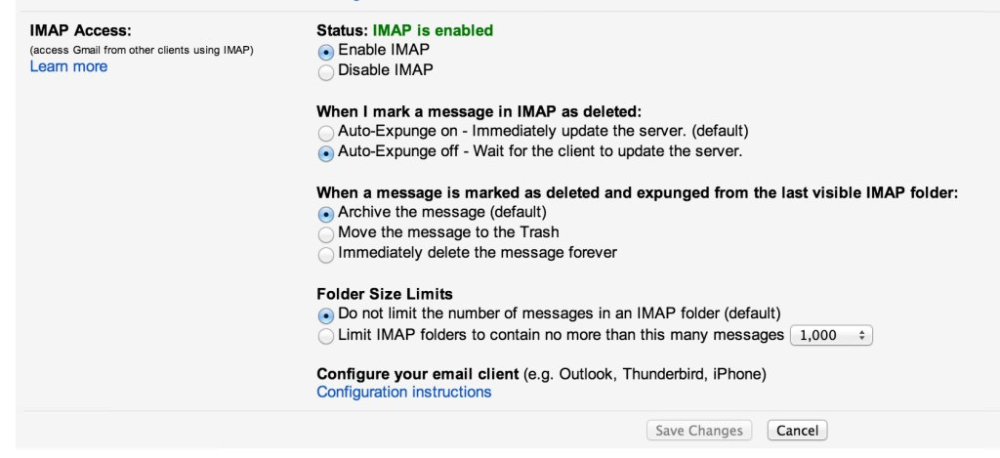

Fixing Gmail Archive with the Delete Key in Apple Mail on Mavericks
October 30, 2013Mac OS X Mavericks included some changes to Apple Mail that made the delete key actually send messages to the Trash in Gmail, even if it was previously configured in Lion to archive messages upon the delete key (usually through “use this mailbox for…” or the trash preferences in the accounts panel of the preferences). People started noticing this problem of deleting messages on Mavericks:
- https://productforums.google.com/forum/#!msg/gmail/IvtEJrG2W7A/TEnQcg5LsTUJ
- http://tidbits.com/article/14219
Here’s the solution I found. Go to the Labels area of the Gmail settings and uncheck the “Show in IMAP” checkbox next to the Trash label:
{kind=link}
Now set your IMAP Auto-Expunge settings to these:

Edit: I tried turning Auto-Expunge on and it still worked. It might just be the setting after it that matters.
Then, try deleting a message in Apple Mail. You might see a new folder appear in your drawer. A little error symbol will appear next to the Trash in your drawer. If you click on it, you will get a message like this:
{kind=link}
In other words, Apple Mail is just sticking it into a folder. Gmail treats this as the message being removed from this Inbox and it will appear in All Mail and not in Gmail’s Trash.
Edit: Better explanation, as I’ve figured more stuff out. I think it works like this: Apple Mail will attempt to delete the message, but will be forced to put it into a local “Deleted Messages” folder when it can’t find the IMAP Trash label. Gmail will then Auto-Expunge the email and Archive it when it is marked as “deleted”. Apple Mail then detects the message in “All Mail” and moves the message from the local Deleted Messages folder to the All Mail folder.
Edit: I believe the second checkbox in the Trash section of your account in Mail’s preferences should become unchecked if this is done correctly:
{kind=link}
Comments